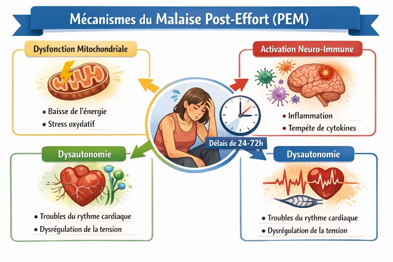

Pacing : éviter le crash d'effort dans le Covid long et la fatigue chronique
Le crash post-effort n'est pas de la fatigue normale. C'est une réaction biologique mesurable. Et il se prévient — si on comprend la logique du pacing.
📖 Termes de référence
- Pacing = Energy management / Pacing (EN)
- Malaise post-effort (MPE) = Post-exertional malaise (PEM)
- Enveloppe énergétique = Energy envelope (EN)
- Seuil anaérobie = Anaerobic threshold (AT)
- ME/SFC = Myalgic encephalomyelitis / Chronic fatigue syndrome (ME/CFS)
⚡ L'essentiel en 4 points
Rester sous le seuil
Le pacing consiste à ne jamais dépasser son enveloppe énergétique pour éviter le malaise post-effort (MPE) — recommandé en première intention dans le Covid long.
Forcer aggrave
Contrairement à la rééducation progressive classique, pousser au-delà du seuil peut aggraver durablement l'état chez les personnes avec un MPE.
Métriques quotidiennes
Suivre énergie, fréquence cardiaque et clarté mentale au quotidien aide à calibrer son enveloppe énergétique réelle et à ajuster ses activités.
Stratégie, pas abandon
Le pacing n'est pas du déconditionnement — c'est une gestion active de l'énergie qui permet de maintenir une qualité de vie sans cycles crash/récupération.
Ce que l'on appelle "crash" n'est pas de la faiblesse
Dans le Covid long, la fibromyalgie et le syndrome de fatigue chronique (SFC/EM), une caractéristique revient systématiquement : l'effort — physique, cognitif ou émotionnel — peut déclencher une aggravation brutale des symptômes dans les 12 à 72 heures qui suivent. Ce phénomène a un nom : le malaise post-effort (PEM, pour post-exertional malaise).
Il ne s'agit pas de "être fatigué après l'effort". Il s'agit d'une réaction dysrégulée du système nerveux autonome et du métabolisme cellulaire — une incapacité à récupérer normalement après une dépense d'énergie.
Pourquoi le corps "crashe"

Chez les personnes concernées, plusieurs mécanismes se combinent :
- Dysfonction mitochondriale — les cellules peinent à produire de l'ATP en réponse à la demande, notamment via la voie oxydative.
- Activation neuro-immune — l'effort déclenche une réponse inflammatoire disproportionnée, avec libération de cytokines pro-inflammatoires (IL-6, TNF-α) ; ce mécanisme est expliqué en détail dans notre article sur la microglie primée.
- Dysautonomie — le système nerveux autonome régule mal le débit sanguin à l'effort, provoquant hypoperfusion cérébrale et effondrement de la tolérance orthostatique.
- Surcharge du système d'éveil — la noradrénaline et le cortisol, mobilisés à l'effort, épuisent des réserves déjà limitées.
Sensation normale pendant l'effort. Le seuil est dépassé sans signal clair.
Fatigue lourde, brouillard, hypersensibilité. La réponse inflammatoire s'installe.
Pic des symptômes. Parfois impossible de se lever. Plusieurs jours de récupération.
Le pacing : rester sous le seuil anaérobie
Le pacing consiste à calibrer son activité pour ne pas dépasser son seuil anaérobie individuel — le niveau d'effort au-delà duquel le métabolisme bascule vers des voies moins efficaces et plus coûteuses pour la récupération.
Concrètement, cela signifie :
- Fragmenter les activités (physiques et cognitives) en courtes séquences suivies de pauses
- Anticiper les journées "chargées" en réduisant les dépenses les jours précédents et suivants
- Apprendre à reconnaître ses signaux précurseurs de surcharge avant que le crash ne s'installe
- Ne pas confondre "je me sens mieux aujourd'hui" avec "je peux rattraper ce que je n'ai pas fait"
Le pacing n'est pas du repos passif. C'est une gestion active de l'enveloppe énergétique disponible — pour rester fonctionnel sans déclencher de réaction en chaîne.
Reconnaître ses signaux précurseurs
Avant le crash, des signaux apparaissent souvent — subtils, et variables d'une personne à l'autre :
- Brouillard mental soudain en cours d'activité
- Sensation de chaleur ou de flush sans raison apparente
- Irritabilité ou hypersensibilité sensorielle augmentée
- Besoin urgent de s'asseoir ou de s'allonger
- Pouls qui monte de façon disproportionnée à l'effort fourni
- Compulsions alimentaires inhabituelles (sucre, gras, sel) — signal métabolique souvent sous-estimé
Les repérer, c'est pouvoir s'arrêter avant de franchir le seuil — et éviter le J+1/J+2 difficile.
🧩 Ce que l'on sait — et ce que l'on ne sait pas encore
[ÉTABLI] Le pacing — gestion de l'enveloppe énergétique pour éviter le dépassement du seuil anaérobie — est la stratégie la mieux étayée pour prévenir le malaise post-effort dans le ME/CFS et le Covid long selon les guidelines NICE 2021.
[SPÉCULATIF] La définition précise du seuil d'effort individuel et les outils de mesure optimaux (VFC, fréquence cardiaque, score subjectif) restent à standardiser. L'efficacité à long terme du pacing seul est difficile à isoler dans les études existantes.
🧭 Suivre l'énergie pour calibrer le pacing
Boussole vous permet de noter chaque jour votre énergie et votre confort physique sur 10. En suivant ces métriques sur 30 jours, il devient possible d'identifier les patterns de crash, votre seuil personnel d'activité tolérable, et les corrélations entre type d'effort et intensité du rebond. Ces données, objectivées, peuvent être partagées avec un professionnel de santé.
Essayer Boussole gratuitementSources
- Maes M, Twisk FN. Chronic fatigue syndrome: biopsychosocial model vs bio(psychosocial). BMC Medicine, 2010. PMC2908558
- Vermeulen RC et al. Patients with CFS performed worse than controls in a repeated exercise study. J Translational Medicine, 2010. PMC2873939
- Dani M et al. Autonomic dysfunction in long COVID. Clinical Medicine, 2021. PMC7850225
- Tomas C, Newton J. Metabolic abnormalities in CFS/ME. Curr Rheumatol Rep, 2018. PMC5954566
- Workwell Foundation. Pacing and Heart Rate Monitoring for ME/CFS. 2021.